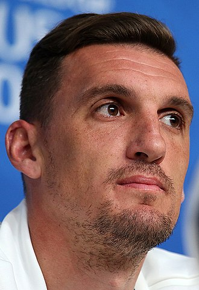

Franco Armani, nacido el 16 de Octubre de 1986, es un futbolista argentino. Juega como arquero y su equipo actual es River Plate de la Primera División de Argentina. Es internacional con la selección Argentina desde 2018. Es el arquero argentino más ganador de la historia, con 22 títulos.
En 2016 estuvo 745 minutos sin recibir goles en Copa Libertadores, ostentando la mejor marca para un arquero en la historia de la competición. En 2018, atajando para River Plate, mantuvo la valla invicta en 7 de los 14 compromisos por Copa Libertadores y fue el arquero con más atajadas de esa edición (36), siendo determinante en la mayoría de los encuentros que culminaron en la coronación de River Plate por cuarta vez en su historia y la segunda de este jugador en la competición.
